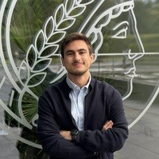

Intern Research Engineer · Sant’Anna Medical Robotics
Local magnetic control strategies for miniaturized coils on an endoscopic device.

Medical Robotics · Bionics Engineering · Pisa, Italy
I am Alberto Anelli, a bionics engineer working on medical robotics: magnetic actuation for endoscopic devices, MRI-compatible soft systems and learning-based navigation for endovascular procedures.
MSc in Bionics Engineering at the University of Pisa and Honors Program in Robotics Science and Technology at Sant’Anna School of Advanced Studies, where I work as an intern research engineer in medical robotics.
Open to PhD positions in medical robotics · from autumn 2027Medical robotics
Compact actuation, image-compatible devices and autonomous navigation: different layers of one question — how robots can work safely inside the body.
Local magnetic control with miniaturized coils mounted on an endoscopic device. Current research in Medical Robotics at Sant’Anna.
SANT’ANNA · 2026–NOW02↗A hydraulically actuated soft catheter for MRI-guided interventions and coils for robot-assisted hyperthermia.
MAX PLANCK INSTITUTE · 202503↗Physics simulation, reinforcement learning and a vision-language-action policy that steers guidewires from fluoroscopy images.
SIEMENS HEALTHINEERS · 1ST PRIZERecent highlight · October 2026
Our π-SA team won the challenge and overall competition with an autonomous navigation approach for endovascular guidewires and catheters.
Experience
Local magnetic control strategies for miniaturized coils on an endoscopic device.
Autonomous guidewire and catheter navigation with π-SA.
Robot-assisted hyperthermia and a hydraulically actuated soft catheter for MRI-guided procedures.
Biorobotics track; Honors Program in Robotics Science and Technology at Sant’Anna.
Beyond medical robotics
Earlier projects in scientific AI, control and physics that shaped how I approach robotics.
IUSS diploma thesis; IGARSS 2026 paper in the IEEE proceedings; EELISA Honorable Mention.
BSc thesis; first-author paper submitted to ECC 2027.
CERN Beamline for Schools winner; published in JINST.
Contact